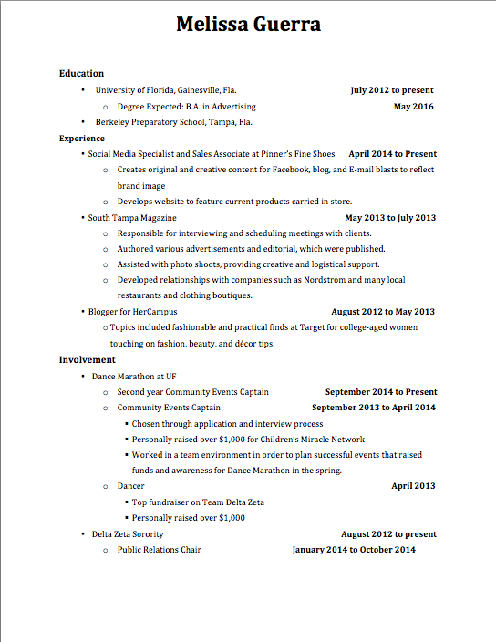
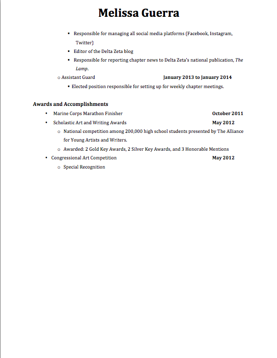

Resume and Cover Letter
Plans for after Graduation
After I graduate from the University of Florida, I hope to find a job working in the advertising field, more specifically in social media. As I have had the opportunity to manage social media accounts for both my Greek organization and a retail establishment, I have experience using multiple interfaces. I have learned a lot through my experience such as the importance of scheduling, word choice, variety in posting style and knowing which posts will be most successful. I really enjoy the field of social media because it is fast-paced and always developing.
I think I would be a successful social media manager because I have a solid understanding of multiple facets of the profession. I love to write which helps in coming up with content for various posts. Photography has always been a hobby of mine and in taking photography courses, I can identify successful composition and what will appeal to a viewer. Also, my experience working in retail has taught me the importance of communication and how to effectively assist a client.
Below you will find a thumbnail of my resume for further review.
 